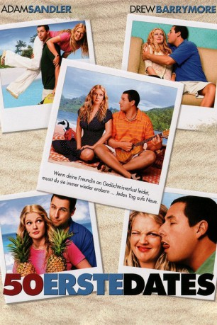

#1418 50 erste Dates
Alternativ: 50 First Dates
 
 IMDB-Wertung: 6.8 / 10
IMDB-Wertung: 6.8 / 10  Metascore: 48
Metascore: 48 
Der auf Hawaii lebende Tierarzt Henry Roth gilt als Frauenheld, der langfristigen Beziehungen lieber aus dem Weg geht. Als er die nette Lucy Whitmore kennen und lieben lernt, ändert sich seine Meinung. Er muss jedoch bald feststellen, dass Lucy seit einem Autounfall an einer speziellen Form der Amnesie leidet, bei der sie nach jeder Nacht den vorhergegangenen Tag wieder vergessen hat. Durch geschickte Vorkehrungen ihrer Familie weiß Lucy bis dato gar nichts von ihrer Krankheit. Henry wirbt somit jeden Tag aufs Neue um Lucys Liebe, die sich jedoch partout nicht an ihn erinnern kann.
Jahr: 2004
Dauer: 99 Minuten
FSK: 0
Land: USA Studio: Columbia PicturesTonspuren: DD5.1 - ,
Untertitel:
Auflösung: 1080p (1920x800) Größe: 8591 MB
Genre: Komödie, Liebe
Regisseur:  Peter Segal
Peter Segal
Drehbuch: George Wing
Soundtrack: Teddy Castellucci
Darsteller:
 Adam Sandler als Henry Roth
Adam Sandler als Henry Roth Drew Barrymore als Lucy Whitmore
Drew Barrymore als Lucy Whitmore Rob Schneider als Ula
Rob Schneider als Ula Sean Astin als Doug Whitmore
Sean Astin als Doug Whitmore- Lusia Strus als Alexa
 Dan Aykroyd als Dr. Keats
Dan Aykroyd als Dr. Keats Amy Hill als Sue
Amy Hill als Sue Allen Covert als Ten Second Tom
Allen Covert als Ten Second Tom Blake Clark als Marlin Whitmore
Blake Clark als Marlin Whitmore Maya Rudolph als Stacy
Maya Rudolph als Stacy- Pomaika'i Brown als Nick
 Peter Dante als Security Guard
Peter Dante als Security Guard Jonathan Loughran als Jennifer
Jonathan Loughran als Jennifer Wayne Federman als Patient
Wayne Federman als Patient- Kent Avenido als Cook's Helper
- Sharon Omi als Cafe Regular
 Glen Chin als Cafe Regular
Glen Chin als Cafe Regular Lynn Collins als Linda
Lynn Collins als Linda- Kristin Bauer van Straten als Female Firefighter
- Brenda Vivian als Salon Patron
- Chantell D. Christopher als Salon Patron
- Nika Williams als Salon Patron
 Nectar Rose als Blonde in Office
Nectar Rose als Blonde in Office Jackie Sandler als Dentist
Jackie Sandler als Dentist- Virginia Reece als Red Head
 Katheryn Winnick als Young Woman
Katheryn Winnick als Young Woman- Peter Chen als Caddy
 Kevin James als Factory Worker
Kevin James als Factory Worker- Jessica Bowman als Tamy , uncredited
 Paul Edney als Seaplane Pilot , uncredited
Paul Edney als Seaplane Pilot , uncredited Jordan Kirkwood als Bar Drinker , uncredited
Jordan Kirkwood als Bar Drinker , uncredited Michelle Lee als Woman , uncredited
Michelle Lee als Woman , uncredited- Anthony Patricio als Hawaiian Trucker , uncredited
 Missi Pyle als Noreen , uncredited
Missi Pyle als Noreen , uncredited- Darlena Roberts als Amnesia Patient , uncredited
- John Patrick Shulak als Tourist , uncredited
- Meilinda Cecilia Soerjoko als Airport Passanger , uncredited
- Anne Stedman als Ex-Girlfriend , uncredited
- Joe Nakashima als Old Hawaiian Man
- Dom Magwili als Security Guard
- J.D. Donaruma als Pablo
- Aukuso Gus Puluti Sr. als Cafe Regular
- Christian Guiterrez als Ula's Kid
- James Lee als Ula's Kid
- Kylie Moore als Ula's Kid
- Keali'i Olmos als Ula's Kid
- Tache Uesugi als Ula's Kid
- Esmond Chung als Sheriff
- Ishtar Uhvana als Salon Worker
- Linda Segal als Patient in Dentist Office
Datei: X:\2004(A-F)\50 erste Dates (2004, FSKo.Al., 1920x800).mkv seit 01.07.2015
Festplatte: HD 2003-2004-2005(A-F)
 Es gibt insgesamt 39 Filme in der Gruppe '2004(A-F)'
Es gibt insgesamt 39 Filme in der Gruppe '2004(A-F)'